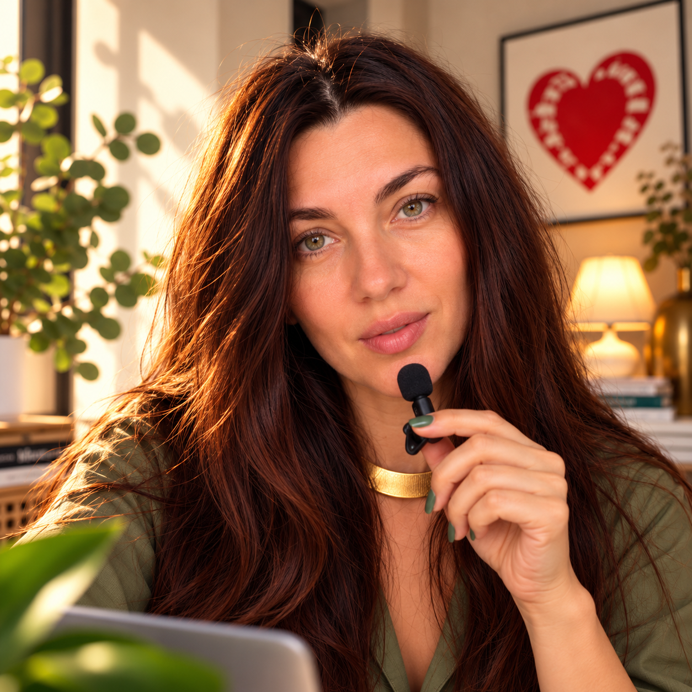

Ирина Вединеева · автор «Веди Вайб»
Я создаю сайтыи цифровые продукты,в которых виден ваш опыт.

Вы можете прийти ко мне с идеей сайта, презентации или продукта с ИИ. Я разберусь, что у вас уже есть, чего не хватает и что стоит делать первым. А затем возьмусь за само воплощение.
Для экспертов, авторов и команд, которым нужно собрать опыт и идеи в понятный проект.
01 / С чего начинается работа
Иногда сначала нужно понять,
что именно делать.
Например, вы хотите презентацию. Но о чём она должна говорить, если ещё не собраны идея продукта, материалы и визуальные правила? Я выясняю это до того, как делать слайды. Так же подхожу к сайту, контенту и инструментам с ИИ.
02 / Моя работа
Мои проекты.
И что в них сделано.
От личного бренда до приложений и собственных цифровых инструментов. Ниже — несколько примеров.
Приложение для эксперта
Интерактивный продуктДиагностика с выбором темы и персональным результатом.
Личный бренд
Позиционирование и контентВизуальные ориентиры, рубрики и темы для экспертного блога.
Студия каруселей
Мой инструментВ этом бесплатном пилоте можно собрать карусель из своих фото и текста, отредактировать её и скачать готовый файл.
Разные задачи — один принцип: начать с реального опыта человека и довести замысел до работающего результата.
Обсудить проект ↗Один из способов работы
«Цифровая память эксперта»: вместе собираем ваш опыт, материалы и важные решения так, чтобы к ним можно было возвращаться при создании контента и новых проектов с ИИ.